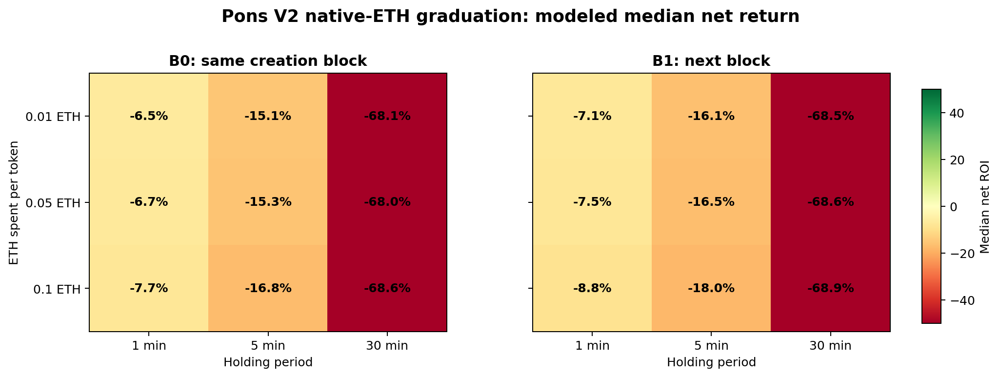
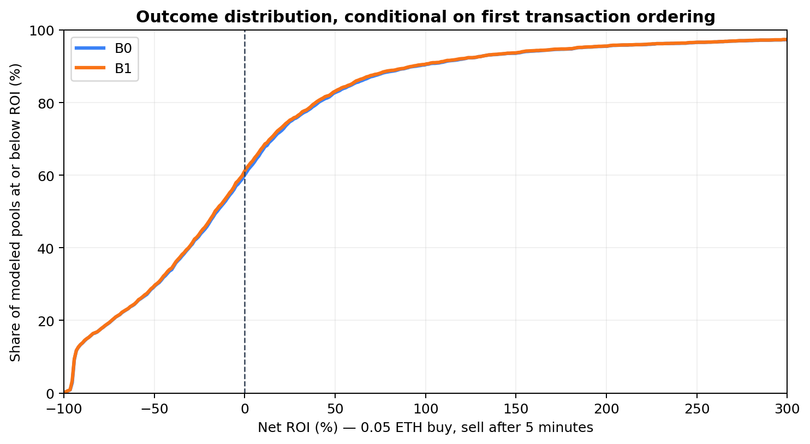

链上观察窗口： 2026-08-21 04:25 UTC 至 2026-09-20 03:40 UTC；Robinhood Chain 主网（chain ID 4663）。
在可精确重放的 3,681 个原生 ETH 毕业池中，以 0.05 ETH 买入、5 分钟后全卖的固定交易量重放模型：B0 中位净收益率为 -15.3% ，胜率 39.7% ；B1 中位净收益率为 -16.5% ，胜率 38.7% 。这里的 B0/B1 都以我们取得该位置的交易排序为前提；它们不是已执行交易的收益，也不含抢排序失败的概率。
B0 的算术平均收益率为 +7.1%，符号为正；新币收益通常有长尾，所以主要判断应看中位数、胜率和尾部损失，而不是只看平均值。
下表为固定交易量重放的净收益率 。买卖都计入 Pons hook 费和该代币固定的创建者税，并减去估计 Gas。每格都是对应池的条件结果分布。
| 入场 | 投入 | 持有 | 中位数 | 平均数 | 胜率 | P10 / P90 |
|---|---|---|---|---|---|---|
| B0 | 0.01 ETH | 1 分钟 | -6.5% | +5.8% | 43.8% | -60.2% / +62.2% |
| B0 | 0.01 ETH | 5 分钟 | -15.1% | +8.6% | 40.6% | -94.4% / +96.3% |
| B0 | 0.01 ETH | 30 分钟 | -68.1% | -5.1% | 24.2% | -95.6% / +116.2% |
| B0 | 0.05 ETH | 1 分钟 | -6.7% | +5.0% | 43.3% | -59.4% / +60.3% |
| B0 | 0.05 ETH | 5 分钟 | -15.3% | +7.1% | 39.7% | -93.9% / +93.6% |
| B0 | 0.05 ETH | 30 分钟 | -68.0% | -6.8% | 23.9% | -95.2% / +112.2% |
| B0 | 0.1 ETH | 1 分钟 | -7.7% | +3.2% | 41.7% | -60.0% / +57.6% |
| B0 | 0.1 ETH | 5 分钟 | -16.8% | +4.4% | 38.5% | -93.9% / +89.0% |
| B0 | 0.1 ETH | 30 分钟 | -68.6% | -9.8% | 23.6% | -95.2% / +106.6% |
| B1 | 0.01 ETH | 1 分钟 | -7.1% | +4.7% | 42.4% | -60.4% / +61.4% |
| B1 | 0.01 ETH | 5 分钟 | -16.1% | +7.4% | 39.5% | -94.5% / +94.6% |
| B1 | 0.01 ETH | 30 分钟 | -68.5% | -6.1% | 23.9% | -95.7% / +112.4% |
| B1 | 0.05 ETH | 1 分钟 | -7.5% | +4.0% | 42.0% | -59.9% / +59.4% |
| B1 | 0.05 ETH | 5 分钟 | -16.5% | +6.0% | 38.7% | -94.0% / +92.2% |
| B1 | 0.05 ETH | 30 分钟 | -68.6% | -7.8% | 23.7% | -95.3% / +109.6% |
| B1 | 0.1 ETH | 1 分钟 | -8.8% | +2.1% | 40.5% | -60.5% / +56.0% |
| B1 | 0.1 ETH | 5 分钟 | -18.0% | +3.4% | 37.5% | -94.0% / +88.1% |
| B1 | 0.1 ETH | 30 分钟 | -68.9% | -10.7% | 23.3% | -95.3% / +104.1% |


分布图横轴截断于 +300%；表格和 CSV 保留全部极端值。
以下只比较 B0、0.05 ETH、持有 5 分钟；不同税率代币的市场关注度也可能不同，因此不能把组间差异直接解释为税本身造成。
| 创建者税 | 池数 | 净收益率中位数 | 胜率 |
|---|---|---|---|
| 0 bps | 974 | -8.5% | 45.0% |
| 1–199 bps | 1,122 | -20.1% | 36.7% |
| ≥200 bps | 1,585 | -14.3% | 38.6% |
PoolGraduated 确定毕业区块、交易顺序、投入池中的 token/ETH；从同笔回执的 Uniswap V4 Initialize 与 ModifyLiquidity 事件读取初始价格和活跃流动性。从发行记录核对原生 ETH 配对与创建者税，从发行时冻结的 fee policy 读取 hook 费。anchor 结果作敏感性对照：它以真实历史池状态卖出，但不把我们的入场价格冲击带入后续路径。主表使用 fixed-flow replay，因为它至少保留了自身买入后的价格影响。逐笔结果见 trades.csv。gasUsed × effectiveGasPrice，无独立 swap 时回退到全样本中位数。本批有效回执样本 3,847 个，每腿中位成本约 0.00003835 ETH 。净收益率 = (卖出实际 ETH − 买入 ETH − 两腿 Gas) / (买入 ETH + 买入 Gas)。eth_getLogs、交易回执、区块时间与只读合约调用；原始公开事件缓存在 data/，运行所需的收费 RPC 地址没有写入文件。